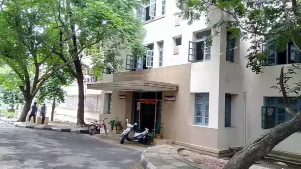

ANNA UNIVERSITY
Home
Map
Details
About Anna Univeristy
Contact
Student Registration
BOYS HOSTEL
CEG campus has around 11 regular hostels for boys. In all these hostels, rooms have to shared by students belonging to the first three years. It is only in the fourth year that students get single rooms allocated to them. All hostels are provided with good WiFi connections and a common TV. The facilities provided in Kurinji hostel are slightly better than those provided at the other hostels. Kurinji hostel has AC’s provided in all the rooms. Rooms are also shared by fewer number of students. Understandably, rooms at Kurinji are a tad pricier than the rest of the lot.

GLIMPSE OF THE HOSTEL